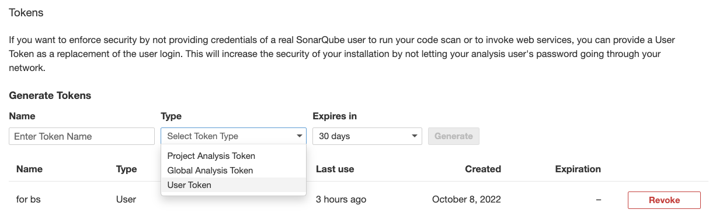
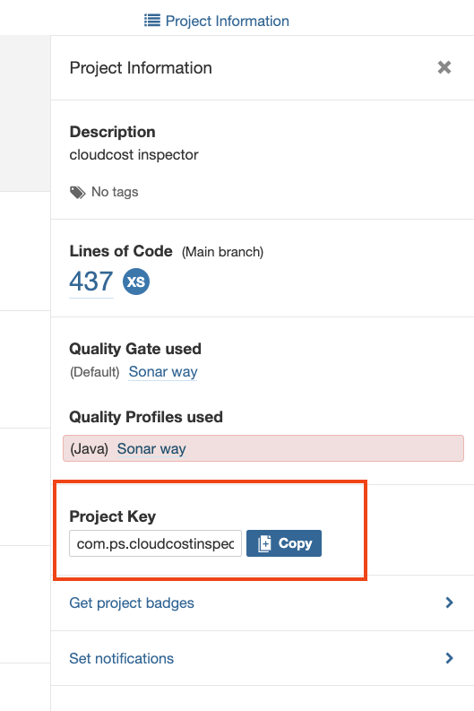
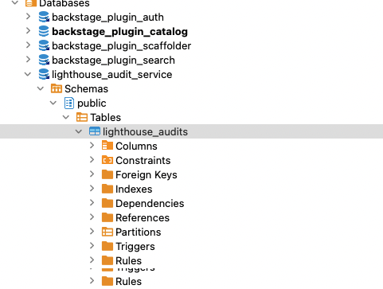

Backstage #
- Backstage, developed by Spotify, is an open platform for building developer portals.
- You can centralize software catalog, microservices catalog, infrastructure tooling, documentation (ADRs), etc. in a single place.
- Click here to read the Spotify blog post providing overview.
- GitHub: https://github.com/backstage/backstage
Demo
- Online Demo: https://demo.backstage.io
Local setup #
- Guide: https://backstage.io/docs/getting-started/
- Crate a new backstage app using npx:
npx @backstage/create-app
yarn dev
- Local URL: http://localhost:3000
- Setting up database:
brew install postgresql
brew services restart postgresql@14 or /usr/local/opt/postgresql@14/bin/postgres -D /usr/local/var/postgresql@14
#Login in local postgresql
psql postgres -- to check postgres connection
CREATE USER backstage WITH PASSWORD 'secret' CREATEDB LOGIN
- Update configuration to use database:
yarn add --cwd packages/backend pg
- Update app-config.yaml:
database:
#client: better-sqlite3
#connection: ':memory:'
client: pg
connection:
host: 'localhost'
port: 5432
user: backstage
password: ****
Key Plugins #
A plugin might needs to be installed on frontend as well as backend (NodeJS) applications.
- TechDocs
- SonarQube
- Jenkins
- Google Lighthouse
- ADR
- ADR Backend
- Cost Insights
- Sometimes plugin installation does not work. Use below:
yarn install --check-files
yarn tsc
Configuring Sonar #
- Install Sonar Frontend Plugin
- Install Sonar Backend Plugin
- Generate User Token from Sonar (Login Required): My Account -> Security (snapshot below)
- Sonar API works without any password if you have the user token 
- Ensure that plugin got installed correctly by running following - it should be in :
yarn tsc
find . -name '*sonar*'
- You should see following files:
./node_modules/@backstage/plugin-sonarqube
./node_modules/@backstage/plugin-sonarqube-backend
./packages/backend/src/plugins/sonarqube.ts
- Get the Sonar Project Key from Dashboard -> Project -> Project Information (see below) 
- Update sonar settings in app-config.yaml:
sonarqube:
instances:
- name: default
baseUrl: http://localhost:9000
# API Key is the user token generated from Sonar
apiKey: ************
- Put the configuration in your project catalog-info.yaml:
annotations:
backstage.io/techdocs-ref: dir:.
jenkins.io/job-full-name: "devlocal:cloudcost-inspector"
sonarqube.org/project-key: "com.ps.cloudcostinspector:CloudCostInspector"
Configuring TechDocs #
- TechDocs is Spotify’s homegrown docs-like-code solution built directly into Backstage.
- It uses MkDocs as the underlying engine as static site generator.
- You can generate documents outside the Backstage (separate CI/CD)
- Detailed instructions are here:
- TechDocs configuration options
brew install graphviz
brew install plantuml
pip install mkdocs
pip install mkdocs-techdocs-core==1.1.7
techdocs-cli serve --no-docker --for testing docs
Configure Lighthouse #
- You need to install Lighthouse Plugin
- Lighthouse Audit Service is a separate Microservice, created by Spotify. This needs to run separately as a container. See instructions here.
- You need to create a DB Schema in PostgreSQL (see below diagram), and Run Lighthouse audit service
- Backstage URL: http://localhost:3000/lighthouse 
- the sidebar is managed inside packages/app/src/components/Root/Root.tsx